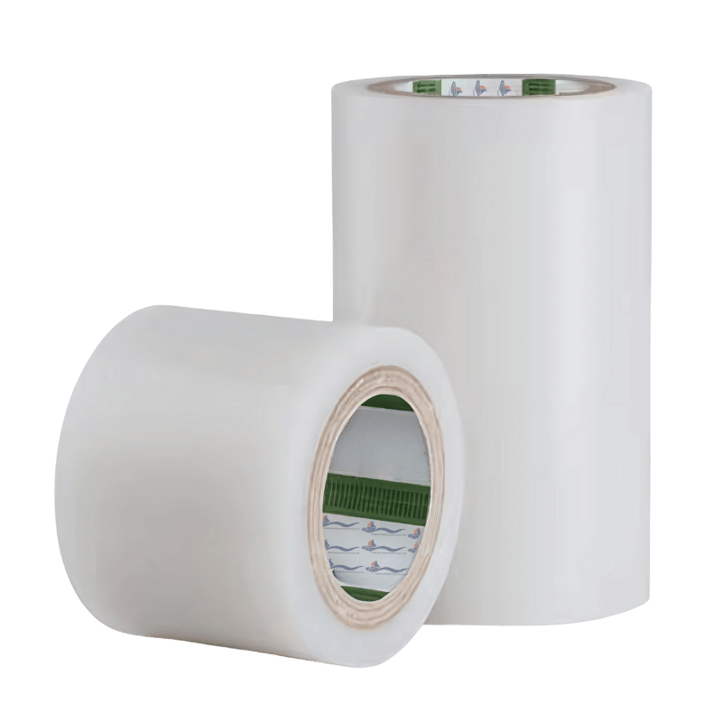

SPV 4058R - Professional Glass & Surface Protection
SPV 4058R is a surface protection tape suitable to protect lacquered plates, glass, plastics and decorative laminates during mechanical processes, storage and transportation.
This product consists of a PE film coated with a pressure sensitive acrylic-based adhesive, providing reliable protection while maintaining excellent transparency for substrate inspection.
The prime application is for protection of screens and side windows, making it ideal for marine applications during construction, refits, and transportation. SPV 4058R offers good wetting behaviour, low unwind resistance, and easy removability with no adhesive transfer.
Request Product Information
Key Benefits
Good Wetting Behaviour
Excellent adhesion properties ensure reliable bonding to various substrate surfaces.
Easy Removable
Clean removal without adhesive transfer, preserving pristine surface finish.
Good Humidity Resistance
Reliable performance in marine environments with varying moisture conditions.
Low Unwind
Smooth application with minimal resistance during installation process.
Technical Specifications
SPV 4058 R Series - Engineered for glass and screen protection
| Product Code | SPV 4058R |
| Film Structure | Clear transparent polyethylene film |
| Adhesive Type | Pressure sensitive acrylic-based |
| Total Thickness | 50 µm |
| Adhesion to BA Steel | 120 cN/20 mm |
| Tensile Strength MD | 22 N/20 mm |
| Elongation MD | 250% |
| Weatherability to BA Steel | 25 h |
| Color | Clear transparent |
| Substrate Compatibility | Lacquered plates (acrylic, PUR, polyester, PVDF, epoxy powder coatings), glass, plastics (PMMA, ABS, PC, hard PVC), decorative laminates |
| Prime Applications | Protection of screens and side windows |
| Availability | Can be slit to client instructions |
Application Areas
Screens & Displays
Prime application for protecting navigation screens and electronic displays during mechanical processes.
Side Windows
Protection for glass windows during storage, transportation and mechanical processes.
Lacquered Plates
Suitable for acrylic, PUR, polyester, PVDF, and epoxy powder coating protection.
Plastics & Laminates
Protection for PMMA, ABS, PC, hard PVC and decorative laminate surfaces.
Application Information
Proper Application For Best Results
- Surface Preparation: Ensure glass surface is clean, dry, and dust-free
- Temperature: Apply at room temperature for optimal adhesion
- Application: Apply with low unwind force for smooth installation
- Inspection: High transparency allows for easy substrate inspection
- Removal: Remove cleanly with no adhesive transfer when protection is no longer needed
Custom Sizing Available: SPV 4058 R can be cut to client instructions for specific project requirements.
Frequently Asked Questions
Common questions about Glass Protection Film
What types of glass surfaces can this film protect?
The SPV 4058 R Series is suitable for protecting all types of glass surfaces including navigation screens, side windows, cabin windows, glass panels, and lacquered plates. It's specifically designed for delicate glass surfaces that require pristine finish protection.
How transparent is the protection film?
The film offers high transparency, allowing for easy inspection of the substrate without removal. This means you can monitor the condition of your glass surfaces throughout the protection period while maintaining clear visibility.
Can the film be removed without leaving residue?
Yes, the film is engineered for easy removal with no adhesive transfer. The acrylic-based adhesive is designed to come away cleanly, leaving glass surfaces pristine and ready for use without additional cleaning.
Is the film suitable for outdoor marine use?
While the film has good humidity resistance, it's primarily designed for protection during construction, refits, transportation, and storage periods. For specific outdoor duration requirements, please contact our technical team for guidance.
Can the film be cut to custom sizes?
Yes, the SPV 4058 R Series can be slit to client instructions. We can provide custom sizing to meet your specific project requirements for screens, windows, or glass panels of any dimension.
What is the maximum duration this film can be left in place?
The duration depends on environmental conditions and application requirements. The film is designed for temporary protection during construction, refits, and transport. For specific duration recommendations based on your application, please consult our technical specifications or contact our team.
Request Product Information
Get detailed specifications, pricing, and application guidance for Glass Protection Film.